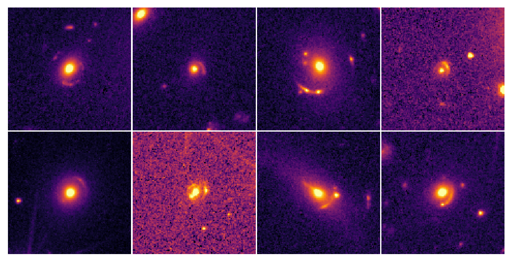
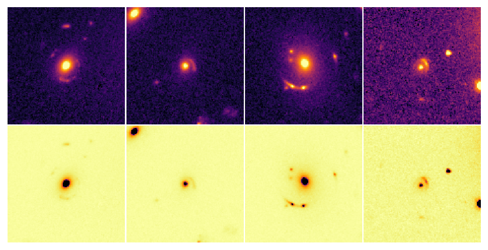
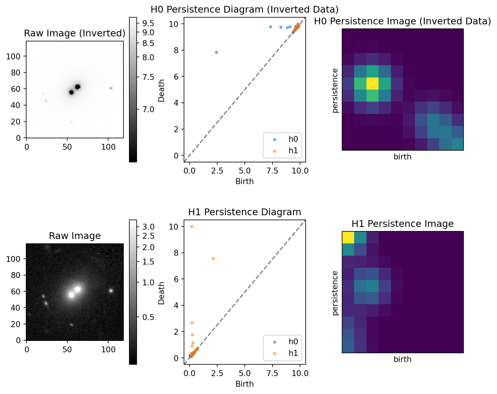
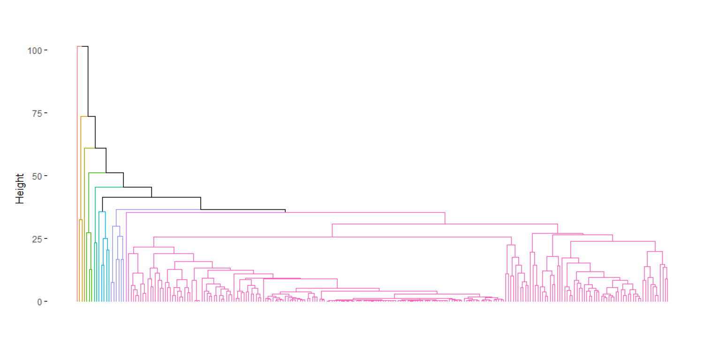

Persistent Images of Gravitionally Lensed Galaxies
Abstract
Dark matter in forground galaxies can distort the light from distant background galaxies. Depending on the distribution of dark matter and the location of the forground matter relative to the background galaxy, the resulting distortion of the distant background galaxy can vary in appearance. Persistent homology is commonly used to identify structure at large scales, but is yet to be used at smaller scales in the field of astronomy. We explore the possibility of using persistence images to identify common structures in images of gravitational lensed galaxies through a hierarchical clustering machine learning algorithm. We find a discrepancy in clustering results between persistence images and image cutouts where the former identified more similar lensed galaxies sooner. Additionally the persistence clustering process takes place at less than 20% of the cutout clustering process. These results could be influenced by the Curse of Dimensionality given the size of the cutouts. We propose a continued investigation into our results that will be enacted in the 2025-2026 school year at Macalester College as a Physics and Astronomy Honors Thesis.
Introduction
This project combines concepts in astronomy, topology, and machine learning into one. What follows is a brief introduction into the three fields.
Astronomy
Through observations of the Coma Cluster, Zwicky (1933) noted that measured velocity dispersions were an order of magnitude higher than what would be possible with the observed mass of the system. In the years that followed, the idea of galaxies being embedded in cold dark matter halos became intrinsically tied to our understanding of the cosmological structure of the Universe, and is well supported by observations and simulations (Frenk and White 2012).
Gravitionally lensed galaxies are intrinsically connected to dark matter, thus exploring commonalities amongst these lensed objects could reveal insight into the distribution of dark matter. Current methods for identifing classifying celestial objects is based on visual appearences, which depend on the orientation of the galaxies in question (e.g., Bertin and Arnouts 1996). Persistent homology offers a potential approach to identify structure regardless of orientation, especially with images (Ghrist 2008).
Persistent Homology
Persistent homology is a branch of topology that identifies persistent features of simplicial structures. By constructing simplicial structures across a filtration, we can compute the homology at each stage in the filtration, allowing us to construct birth-death pairs of features in data. From the birth-death pairs, or persistence diagram, we can compute the persistence image, which is a vectorized form of the information captured in the birth-death pairs, allowing for implementation in machine learning algorithms (Adams et al. 2015).
In astronomy, persistent homology is primarily used at the large-scale (e.g., Chen et al. 2015; Sousbie, Pichon, and Kawahara 2011). More specifically, persistent images have not yet been applied to smaller scale astronomical observations. If persistent homology is capable of idenfying structures in image data regardless of orientation, it seems apparent that we should be applying this to the field of astronomy, especially where classification of objects is based primarily on visual orientation.
Machine Learning
When trying to identify potential similar structure in data through unsupervised machine learning, there are many algorithms that can be implemented. One of the most simple unsupervised machine learning clustering algorithms is the hierarchical clustering algorithm. The idea behind this algorithm is to identify similar datapoints based on their distances to each other. All variables are standardized to allow for comparison between variables of different units, and the closest two points are fused together. Once a cluster is created, we use single linkage method to create the clusters at higher distances. This linkage method will only join two clusters together at a distance \(d\) if all of the point in both clusters are at least a distance \(d\) away from each other.
Data
The Euclid Space telescope was launched in 2023 with the intention of mapping 2/3 of the night sky (Euclid Collaboration et al. 2025). On March 19, 2025, the Euclid Collaboration released their Quick Data Release (Q1), which included a catalog of ~2500 gravitationally lensed galaxies identified via a machine learning classification algorithm (Collaboration et al. 2025). Each classification was given a grade (“A”, “B”, “C”), with grade “A” having the highest confidence of accurate classification.
We selected targets with the grade “A” confidence rating which was equivalent to a sample of 250 lensed galaxies. Once we had the coordinates for each target, we used the Euclid class in the astroquery Python library to extract the \(119 \text{ pixels } \times 119 \text{ pixels }\) cutouts of the FITS images taken by Euclid. Examples of the cutouts are shown in Figure 1.
Calibration images are subtracted from the raw image in order to produce a science image. This difference can result in negative values in the resulting science image that can lead to negative birth-death pairs during the persistence calcualtion. To get around this, we set all values less than zero to zero for each cutout. Additionally, we normalized and rescaled each image to have pixel values between 0 and 10. We also created an inverted copy of the preprocessed images to compute superlevel persistence described in the analysis section. Figure 2 shows examples of the preprocessed images, both uninverted and inverted.

Analysis
To calculate the persistence of each image, we used the Python library giotto-tda’s CubicalPersistence class. Note that cubical persistence is essentially the cubical analog to simplical persistence, and works well with images.
Due to most of the values in our images having values close to zero, we compute the superlevel cubical persistence for the \(H_0\) homology by running the cubical persistence on the inverted preprocessed images. The uninverted images were used to calculate the \(H_1\) homology.
Once the birth-death pairs were calculated, we computed the persistent images via the Persim Python library’s PersistenceImager class. Figure 3 shows the overall analysis process for a single cutout.

After creating the persistence images for each cutout, we collapsed each 10x10 pixel array into a vector with length 100, then concatenated the resulting \(H_0\) and \(H_1\) vectors into one vector of length 200. Each vector becomes a row in a dataframe that will be used for hierarchical clustering. The final dataframe of persistent image vectors had 242 rows, corresponding to the 242 cutouts, and 200 columns, corresponding to the concatenated \(H_0\) and \(H_1\) persistence image vectors.
A similar process was done to construct the the dataframe of the vectorized versions of the 119x119 cutouts.
We used the cluster R package to perform hierarchical clustering on the dataframe of persistence vectors and the dataframe of cutout vectors.
We chose to use hierarchical clustering as opposed to k-means, another standard clustering algorithm, as k-means requires us to know how many clustering groups we believe there to be for our data, while hierarchical clustering identifies clusters across a range of distance values that can be represented visually by a dendrogram.
Results and Discussion
Figure 4 and Figure 5 show the results from the hierarchical clustering of the persistence vectors and cutout vectors, respectively.


As with all dendrograms, the horizontal distance between leaves is meaningless, and the primary feature to be interpreted is the height at which cluster linkages occur. Comparing the dendrograms of Figure 4 and Figure 5, not only do the persistent images appear to fuse much earlier on in the clustering process, but the overall clustering process happens at a much lower range in height than the cutout clusterings.
A potential reason for this discrepancy in dynamic range could be the size of the cutout vectors; collapsing a \(119\times119\) array creates a \(14161\) length vector, resulting in a very wide (\(242\times14161\)) dataframe for the cutouts. When the number of variables (columns) in a dataframe starts to become large, distance that are calculated using the variables start to become increasing large in a phenomenon known as the Curse of Dimensionality. This could also explain the discrepancy between the high inital fusing heights in Figure 4 relative to those in Figure 5.
However, the number clusters that are fused at relatively small heights in Figure 5 could be interpreted as a collection of lensed clusters with very similar structural features, and is not identified in the cutout clustering results of Figure 4. This, in addition to the dimensionality issue with the cutouts, warrents some additional exploration.
Conclusions
Our clustering results of the persistent images of 242 gravitationally lensed galaxies taken from the Euclid Q1 data release have identified a collection of galaxies that are more similar according to their persistence images than they are with their cutout images. This result could be affected by the high dimensions of the cutout images, wherein the Curse of Dimensionality could cause a bias in the linkage distances of the clusters, shifting the overall heights of the cutout clusterings to larger values. This result needs to be investigated further.
We intend to continue exploring persistence images in this scenario through the following:
- Reducing the size of the cutout vectors through PCA and more advanced dimension reduction algorithm.
- Comparing our hierarchical clustering results with a more advanced clustering algorithm.
- Exploring parameter space of the persistence images algorithm.
- Investigating the similarities found from the clustering results to determine what, if any, classifications with physical interpretations exist.
The goals above will be an outline for a Physics and Astronomy Honors Thesis during the 2025-2026 school year at Macalester College.
References
Adams, Henry, Sofya Chepushtanova, Tegan Emerson, Eric Hanson, Michael Kirby, Francis Motta, Rachel Neville, Chris Peterson, Patrick Shipman, and Lori Ziegelmeier. 2015. “Persistence Images: A Stable Vector Representation of Persistent Homology.” arXiv e-Prints, July, arXiv:1507.06217. https://doi.org/10.48550/arXiv.1507.06217.
Bertin, E., and S. Arnouts. 1996. “SExtractor: Software for source extraction.” 117 (June): 393–404. https://doi.org/10.1051/aas:1996164.
Chen, Yen-Chi, Shirley Ho, Peter E. Freeman, Christopher R. Genovese, and Larry Wasserman. 2015. “Cosmic Web Reconstruction Through Density Ridges: Method and Algorithm.” Monthly Notices of the Royal Astronomical Society 454 (1): 1140–56. https://doi.org/10.1093/mnras/stv1996.
Collaboration, Euclid, M. Walmsley, P. Holloway, N. E. P. Lines, K. Rojas, T. E. Collett, A. Verma, et al. 2025. “Euclid Quick Data Release (Q1): The Strong Lensing Discovery Engine a – System Overview and Lens Catalogue.” https://arxiv.org/abs/2503.15324.
Euclid Collaboration, Y. Mellier, Abdurro’uf, J. A. Acevedo Barroso, A. Achúcarro, J. Adamek, R. Adam, et al. 2025. “Euclid: I. Overview of the Euclid mission” 697 (May): A1. https://doi.org/10.1051/0004-6361/202450810.
Frenk, C. S., and S. D. M. White. 2012. “Dark matter and cosmic structure.” Annalen Der Physik 524 (9-10): 507–34. https://doi.org/10.1002/andp.201200212.
Ghrist, Robert. 2008. “Barcodes: The Persistent Topology of Data.” BULLETIN (New Series) OF THE AMERICAN MATHEMATICAL SOCIETY 45 (February). https://doi.org/10.1090/S0273-0979-07-01191-3.
Sousbie, T., C. Pichon, and H. Kawahara. 2011. “The Persistent Cosmic Web and Its Filamentary Structure – II. Illustrations.” Monthly Notices of the Royal Astronomical Society 414 (1): 384–403. https://doi.org/10.1111/j.1365-2966.2011.18395.x.
Zwicky, F. 1933. “Die Rotverschiebung von extragalaktischen Nebeln.” Helvetica Physica Acta 6 (January): 110–27.